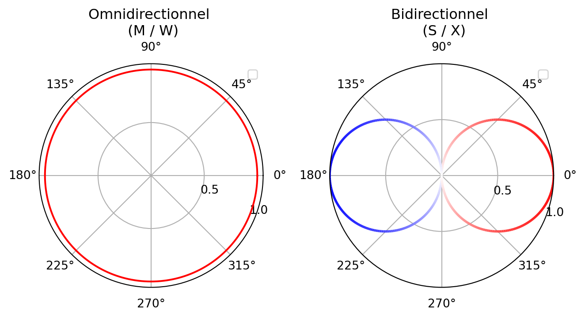
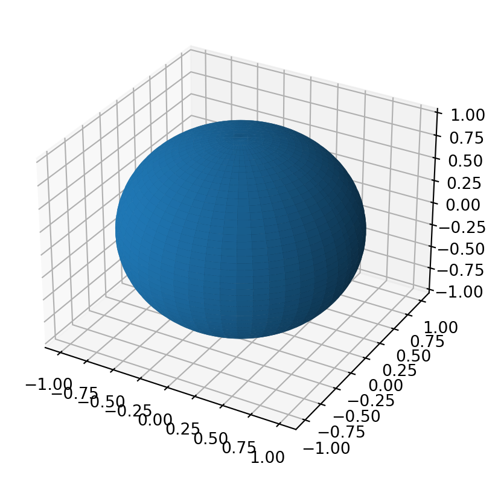

37 L’ambisonique
L’ambisonique (ou ambisonie), s’attache à décrire le champ acoustique en trois dimensions d’un espace donné en un point. C’est à la fois une technique de prise de son, grâce à l’utilisation de microphones particuliers et une solution de panning en post-production. De part son indépendance par rapport au dispositif du système de diffusion, on qualifie parfois un mixage ambisonique de mixage orienté scène. Nous ici l’implication que nous décrivons, à l’aide de canaux audio, une scène sonore, et non pas un certain arrangement de haut-parleur (par opposition à l’orienté canal).
L’ambisonie se distingue également des approches plus conventionnelles (approche perceptives du panning usuel) par son approche physique. Nous verrons que dans son fonctionnement, l’ambisonie réalise l’échantillonnage du champ de pression acoustique. Cet échantillonnage peut varier en précision en fonction de l’ordre auquel nous souhaitons travailler.
Nous allons commencer par étudier l’ambisonie dit du “premier ordre”, tel que proposé par Michael Gerzon et son équipe dans les années soixante-dix. Seulement ensuite, nous questionnerons l’ambisonie d’ordre plus élevé, apparut au début des années 2000.
37.1 L’ambisonie du premier ordre (FOA)
L’ambisonie du premier ordre (ou FOA pour First Order Ambisonic) voit le jour sous la forme d’une technique de prise de son. Celle-ci permet l’enregistrement d’un scène sonore sur quatres canaux, que l’on peut ensuite décoder sur n’importe quel système de haut-parleurs.
Pour capturer le champ acoustique en un point, il faut donc s’intéresser au champ acoustique lui-même. Nous l’avons vu à la Section 2.1, sous sa forme acoustique, une onde sonore se caractérise par la variation locale de la pression. Pour mesurer la pression en un point, nous pouvons utiliser un microphone omnidirectionnel (également appelé microphone à pression). Ce microphone omnidirectionnel va donc rendre compte a chaque instant du temps de la valeur de la pression. A ce stade, il n’est pas question de parler de spatialisation, la capatation d’une tel capsule étant monophonique.
Il conviendrait donc de mesurer la “direction” du déplacement local des particules d’air. Quelque part, on se demande dans quel sens varie la pression. Pour cela, on cherche à mesurer la vitesse de ce déplacement, et donc la variation de la pression en un point. Pour se faire, on utilise un microphone bidirectionnel (aussi appelé à gradient de pression). Ce microphone va donc mesurer, à chaque un instant du temps, la différence entre la pression qui à lieu tout de suite et celle qui a eu lieu. On caractérise donc une variation dans le temps.
Astuce
Pour clarifier le sujet, faisons le parallèle avec une voiture sur une route. On peut facilement mesure sa position sur la route (à quelle borne kilométrique se situe t-elle ?). Sa vitesse correspond à la variation de son déplacement dans le temps (combien de temps à telle mise pour passer d’une borne kilométrique A à une borne kilométrique B). Son accélération est alors la mesure de la variation de la vitesse. Quand j’accélère, la vitesse augmente, quand je décélère, la vitesse diminue, quand l’accélération est nulle, la vitesse est constante.
Nous pourrions pousser ce raisonnement dans l’absurde : si la voiture oscille entre marche avant et marche arrière (donc sa position moyenne est toujours la même), nous pouvons faire une parallèle direct avec ce que vie une particule d’air lorsqu’elle est traversée par une onde sonore.
Une capsule bidirectionnelle nous permet de mesurer dans quel axe se déplace les molécules d’air (si les les molécules oscillent dans l’axe du microphone, on obtient une tension mesurable, si les molécules oscillent sur l’axe normal (à 90°) de l’axe du microphone, on obtient une tension négligeable). Cependant cela ne nous renseigne pas si la source sonore responsable de la perturbation se trouve plutôt devant ou derrière le microphone. Cependant, si nous associons au même point de l’espace une capsule omnidirectionnelle et une capsule bidirectionnelle, nous allons pouvoir lever cette indétermination.

Si nous additionnons le signal obtenue par la cellule omnidirectionnelle et la cellule bidirectionnelle, nous crééons une directivité cardioïdes qui écoute vers l’avant du microphone bidirectionnelle, et donc, rejette ce qui se trouve dans son dos. Si l’on soustrait au microphone omnidirectionnel la tension obtenue par le microphone bidirectionnel, on créer alors une directivité cardioïdes qui écoute à l’arrière du microphone omnidirectionnel et rejette ce qui se trouve devant lui. Nous venons ici de fabriquer un couple MS.
Notre dispositif permet ici de capter des ondes sonores selon un axe (ici, X). Si l’on souhaite étendre ce dispositif pour capter l’espace en trois dimensions, nous serions naturellement tenté d’ajouter deux autres capsules bidirectionnelles.
